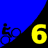

|
| Howard Kvech gets ready for the upcoming sprint between Jennie Phillips and Dennis Pedersen (Josh Hadley photo) |
|  |
2008 Low-Key Hillclimbs Week 6 Results: Jamison Creek Rd 08 Nov 2008 |
|
| Howard Kvech gets ready for the upcoming sprint between Jennie Phillips and Dennis Pedersen (Josh Hadley photo) |
The Low-Key Hillclimbs visited Big Basin and Jamison Creek Road this week. By the start, the sun had warmed the chilly morning air just enough for perfect climbing conditions. Meanwhile, the unusually heavy pre-climb traffic of aromatic vintage pick-up trucks dissipated leaving Low-Keyers with empty roads for the climb. Basically a perfect day.
Some of the Bay area regulars gave this week a pass, due to the relatively long drive over the ridge to the Big Basin start. Yet Santa Cruz's team Bike Trip made up for the short-fall, with an impressive 14 riders in attendance. Not surprisingly, Bike Trip took the week's top team score, followed by San Jose Bike Club and Sisters of No Mercy. The Sisters suffered the effects of a low women's turnout: by placing three very strong climbers in , , and , with and the full rest of the field, they set a fast median time, which knocked down the women's scores this week relative to what they probably would have been with a more diverse turnout. This allowed San Jose to retake the top spot in the team standings, but the Sisters aren't far behind.
At the head of the field, Tim Clark tried to stay with hybrid-electric rider Bill Bushnell, and as a result shattered the field, as usual. Only a few riders were able to follow the scorching early pace, your commentator not among them. After Bill Bushnell assumed his usual place first to the top of the climb, Tim led the unassisted riders to the summit at Empire Grade, with Clark following 24 seconds later. Still, Clark was able to take over the top spot in the standings, due to his strong result at Bear Gulch two weeks ago. It's very close, though, with three climbs remaining.
In addition to taking over the top spot in the series standings, Clark was also one of the three winners of a copy of John Sommerson's excellent book, "The Complete Guide to Climbing (by Bike)", which is sold in local bike shops. Other winners, their finishing spot chosen at random, were Dennis Pedersen and William von Kaenel. More book prizes to follow in coming weeks!
Thanks to coordinator Lucia Mokres, with help from Barry Burr, Phil Dubach, Josh Hadley, Howard Kveck, Garrett Lau, Pat Parseghian, and Denin Sahovic for making today's climb possible!median time = 14:00
pl # rider team category time mph fph score 1 244 Bill Bushnell Low-Key Hybrid 14:00 12.86 6086 100.00
median time = 23:21
pl # rider team category time mph fph score 1 210 Tim Clark Red Octane 35+ 18:18 9.84 4656 127.60 2 39 Clark Foy San Jose Bike Club 40+ 18:42 9.63 4556 124.87 3 352 Geoff Drake Bike Trip 45+ 19:13 9.37 4434 121.51 4 217 Thomas Novikoff Cambio 2 19:17 9.33 4418 121.09 5 1 Dan Connelly Low-Key 3 19:32 9.22 4362 119.54 6 328 Mark Edwards Bike Trip 45+ 19:45 9.11 4314 118.23 7 97 Greg McQuaid San Jose Bike Club 35+ 19:50 9.08 4296 117.73 8 585 Michael Barnes 20:29 8.79 4159 114.00 9 213 Tom Gardin 35+ 20:42 8.70 4116 112.80 10 20 James Porter Western Wheelers Out Of Shape Dads 21:17 8.46 4003 109.71 11 518 Carmelo Rios Fighting Bobas 5 21:18 8.45 4000 109.62 12 506 Nils Tikkanen Bike Trip 3 21:30 8.37 3963 108.60 13 424 Joe Fabris Fighting Bobas 45+ 21:48 8.26 3908 107.11 14 343 Matt Werner Bike Trip 45+ 21:57 8.20 3882 106.38 15 250 Ian Sowden 22:10 8.12 3844 105.34 16 67 Martin Hyland Western Wheelers 50+ 22:16 8.08 3826 104.87 17 307 Christian Paquet Doogie 50+ 22:26 8.02 3798 104.09 18 323 Scott Martin Bike Trip 50+ 22:54 7.86 3721 101.97 19 421 Matt Wocasek Bike Trip 4 23:05 7.80 3691 101.16 20 335 Jim Langley Bike Trip 50+ 23:06 7.79 3688 101.08 21 492 Tim Sawyer Bike Trip 45+ 23:12 7.76 3672 100.65 22 143 QP Lin 23:16 7.74 3662 100.36 23 461 Larry Bruberg Bike Trip 50+ 23:21 7.71 3649 100.00 24 349 Dennis Pedersen Bike Trip 45+ 23:43 7.59 3592 98.45 25 501 Oscar Lomeli Bike Trip 50+ 23:45 7.58 3587 98.32 26 455 Erik Strom Mud 'n' Crud 23:58 7.51 3555 97.43 27 579 Jonathan Walden 24:15 7.42 3513 96.29 28 140 Gary Griffin Bike Trip 55+ 24:20 7.40 3501 95.96 29 452 Bruce Gardner Monta Vista Velo 35+ 24:49 7.25 3433 94.09 30 236 Paul Melville Doogie 55+ 24:50 7.25 3431 94.03 31 286 William von Kaenel LGBRC 40+ 25:10 7.15 3385 92.78 32 481 Chris Baker Bike Trip 45+ 25:31 7.05 3339 91.51 33 591 Neal Herman Team Spike 26:13 6.87 3250 89.07 34 557 Matt Beadon Nvidia 30+ 27:00 6.67 3156 86.48 35 351 Jeff Swan Team Spike 27:37 6.52 3085 84.55 36 505 Christopher Olson Google 28:22 6.35 3004 82.31 37 450 John Hostetler San Jose Bike Club 50+ 29:07 6.18 2926 80.19 38 408 Richard Contreras 29:09 6.17 2923 80.10 39 478 Patrick Callahan Western Wheelers 35+ 29:33 6.09 2883 79.02 40 73 Barry Burr One Leg to Stand On 45+ 30:00 6.00 2840 77.83 41 615 Bob Corman Team Spike 30:32 5.90 2790 76.47 42 621 Paul Woodard Team Spike 31:03 5.80 2744 75.20 43 454 Bob Montague Bike Trip 45+ 32:36 5.52 2613 71.63 44 484 Wolfgang Timm Western Wheelers 40+ 33:00 5.45 2582 70.76 45 294 Doug Simpkinson Webcor/Alto Velo Bionic 38:47 4.64 2197 60.21
median time = 24:58
pl # rider team category time mph fph score 1 449 Jennie Phillips Sisters of No Mercy 45+ 23:44 7.58 3590 105.20 2 240 Janet Martinez Sisters of No Mercy 40+ 24:28 7.36 3482 102.04 3 394 Holly Harris Sisters of No Mercy 45+ 24:58 7.21 3413 100.00 4 445 Mei Xi Mud 'n' Crud 25:51 6.96 3296 96.58 5 511 Marie-Claire Vacher Western Wheelers 37:03 4.86 2300 67.39
pl team score scoring 1 Bike Trip 348.34 (Geoff Drake, Mark Edwards, Nils Tikkanen) 2 San Jose Bike Club 322.79 (Clark Foy, Greg McQuaid, John Hostetler) 3 Sisters of No Mercy 307.24 (Jennie Phillips, Janet Martinez, Holly Harris) 4 Western Wheelers 293.59 (James Porter, Martin Hyland, Patrick Callahan) 5 Team Spike 250.09 (Neal Herman, Jeff Swan, Bob Corman) 6 Low-Key 219.54 (Dan Connelly, Bill Bushnell) 7 Fighting Bobas 216.73 (Carmelo Rios, Joe Fabris) 8 Doogie 198.11 (Christian Paquet, Paul Melville) 9 Mud 'n' Crud 194.01 (Erik Strom, Mei Xi) 10 Red Octane 127.60 (Tim Clark) 11 Cambio 121.09 (Thomas Novikoff) 12 Monta Vista Velo 94.09 (Bruce Gardner) 13 LGBRC 92.78 (William von Kaenel) 14 Nvidia 86.48 (Matt Beadon) 15 Google 82.31 (Christopher Olson) 16 One Leg to Stand On 77.83 (Barry Burr) 17 Webcor/Alto Velo 60.21 (Doug Simpkinson)